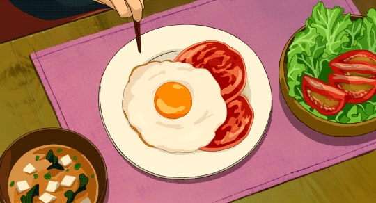

Eggs on Toast

Description
Eggs on toast is a quick and easy breakfast or yummy snack
Ingredients
Optional Extras:
- Butter
- Sauce of your choice
- Avocado (if you never want a roof over your head)
Method
- Toast bread
- Cook eggs your preferred way (I like fried or scrambled)
- Place eggs on toast
Yum!
Home